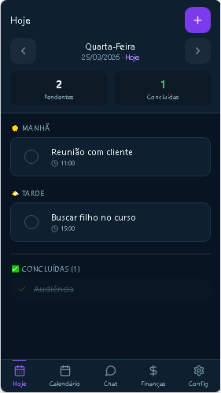
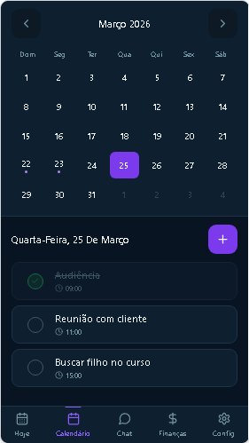

ADV Agenda
Um aplicativo para organizar rotina, compromissos e finanças em um só lugar
O ADV Agenda reúne organização diária, calendário, finanças e assistente com IA em uma navegação simples, moderna e pensada para facilitar o acompanhamento da rotina e da vida financeira.
Rotina do dia
A tela inicial mostra tarefas pendentes, concluídas e compromissos organizados por período, facilitando a visão rápida da agenda.
Calendário e planejamento
O calendário mensal permite acompanhar datas, tarefas e compromissos com clareza, mantendo o planejamento sempre acessível.
Finanças e assistente
O app reúne resumo financeiro, histórico, chat e criação rápida de tarefas e compromissos com apoio de inteligência artificial.

Tela Hoje

Calendário

Resumo Financeiro
Assistente com IA